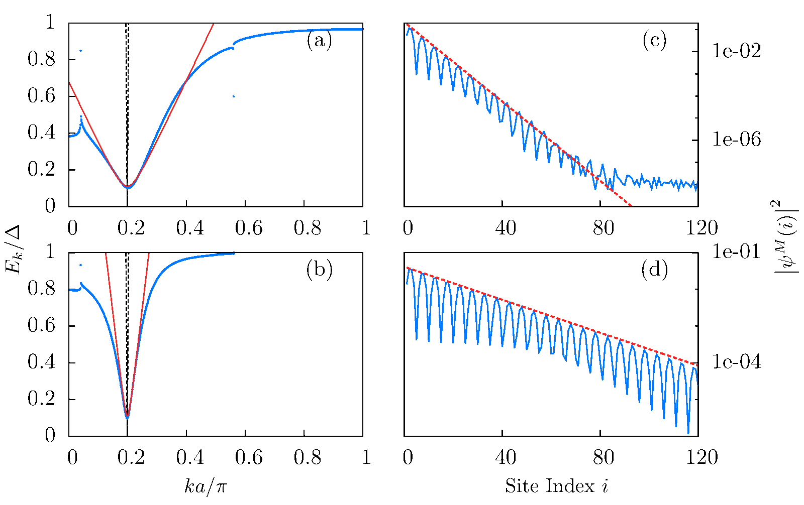
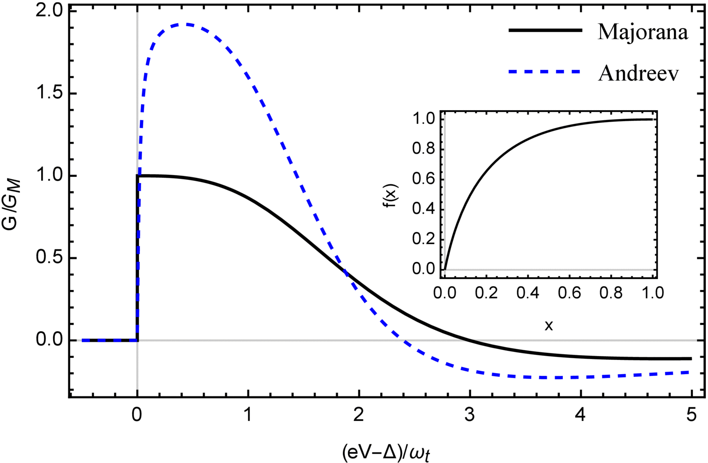
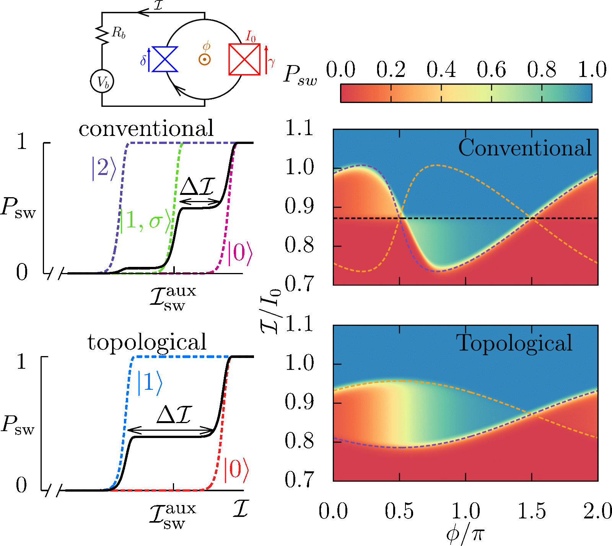
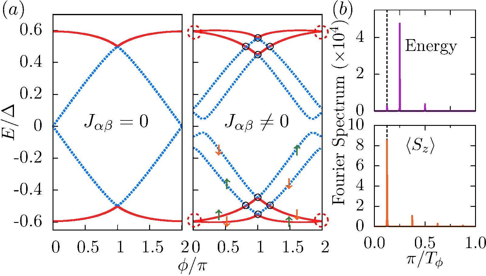

I’m currently interested in signatures of topological superconductivity and Majorana bound states.
Topological superconductors host gapless excitations at the edge, protected by the nontrival topology of their bulk band structures. Specifically in one dimension, the excitations located at the ends of the wire with zero energy are quite remarkable as they turn out to be Majorana bound states or in short Majoranas. These Majoranas are neither fermions nor bosons but obey nonabelian quantum statistics when braided around one another. This nonabelian statistics is not only interesting physically, but may also be useful for quantum computation. Due to their zero-energy nature, Majoranas give rise to degenerate ground states, which can be used as qubits to store quantum information. For a system of Majorana qubits, gate operations can be effected nonlocally via braiding. Hence, decoherence by local perturbations is highly suppressed. This leads to the amazing concept of topological quantum computation. Given their highly interesting physical properties and potential applications to quantum computation, engineering topological superconductors hosting Majoranas in the laboratory is an important first step in this field. There have been quite a few theoretical proposals, and two platforms &mdash based on semiconductor nanowires and adatom chains &mdash have been successfully realized in the laboratory. In view of this remarkable progress, there is considerable hope that the field can embark on braiding experiments and move towards quantum computation platforms in the near future

Recently, Yazdani's lab in Princeton realized an intriguing Majorana platform by placing a ferromagnetically aligned Fe adatom chain on top of a superconducting Pb substrate. The STM measurements, providing both energetic and spatial resolution, showed zero-energy bound states at the ends of the chain which were identified as Majoranas. It was initially a major puzzle why the localization length of these bound states was shorter than the coherence length of Pb by two orders of magnitude, although the latter was expected to be a rough estimate of the Majorana localization length. To unravel this puzzle, I looked at the superconducting proximity effect more closely, and showed that one can indeed have strongly localized Majoranas in proximity coupled systems. My key insight was that for strong coupling between normal and superconducting system, the coherence length of proximity-induced superconductivity can differ dramatically from the coherence length of the proximity-providing superconductor, which is the result of a strong velocity renormalization. The strong localization of the Majoranas may be useful in future quantum computation as braiding requires the distance between Majoranas to be larger than their localization lengths.

It is a prominent prediction that tunneling into a Majorana from a metallic lead produces a quantized zero-bias conductance peak at zero temperature. However, Majorana experiments consistently show non-quantized peaks. Presumably, the failure to observe quantization is a result of temperature broadening as well as inelastic poisoning processes. I showed that using superconducting instead of normal-metal leads has two advantages. First, the conductance is not only universal but also protected against temperature effects by the superconducting gap. Second, I predicted that Majoranas are signalled by symmetric conductance peaks at bias voltages eV=± Δ (Δ is the gap of the superconducting lead). The latter prediction was already checked experimentally by the groups of K. Franke and A. Yazdani.

A fractional 4π Josephson effect is predicted to be one of the strongest indications of topological superconductivity. However, this effect is presumably difficult to observe due to quasiparticle poisoning processes and diabatic transitions. Rather than measuring the current-phase relation directly, I proposed to perform a much simpler switching probability measurement, which provides robust signatures of topological Josephson junctions even in the pressence of quasiparticle poisoning. Given that this type of measurements has already been performed for conventional Josephson junctions (e.g., by the Quantronics group in Paris), measurements on topological Josephson junctions are likely to be performed in the near future.

Superconductor/quantum spin Hall/superconductor junctions in the presence of a Zeeman field are a prototypical setup for creating topological Josephson junctions. When the Zeeman field is absent and electron-electron interactions are neglected, the junction is expected to exhibit a 2π-periodic dissipative Josephson effect. It thus came as a surprise when Molenkamp's group probed Shapiro steps and Josephson radiation in such junctions and found evidence for 4π-periodic currents. Motivated by this puzzle, I considered realistic junctions in which there are charge puddles which act as magnetic impurities coupled to the helical edge. I showed that as long as the coupling is time-reversal symmetric, the Josephson effect generically becomes 8π-periodic, which can be thought as boiling down to coupling of &021244 parafermions. This 8π Josephson effect is a result of the fermion parity anomaly and a remarkable spin transmutation. To connect to the experimental observations, I provided scenarios how this effect may appear as having period 4π. It will be interesting to see whether future experiments can distinguish this explanation as a parafermion effect from a more elementary explanation in terms of inelastic relaxation of two quasiparticles into a Cooper pair which applies even to pristine junctions.